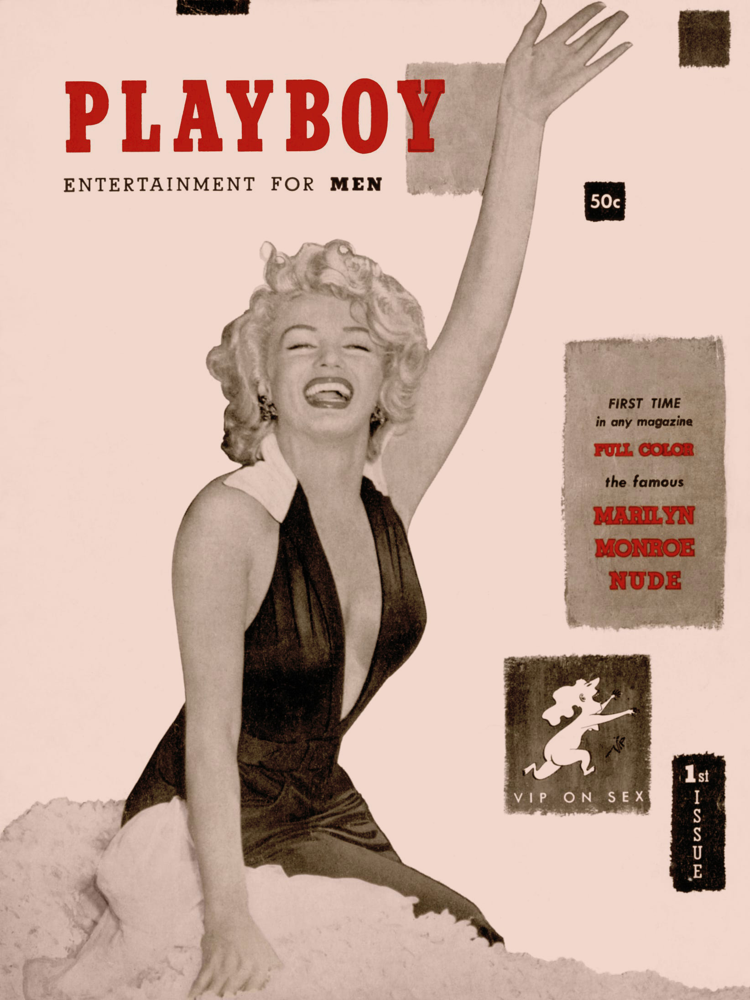
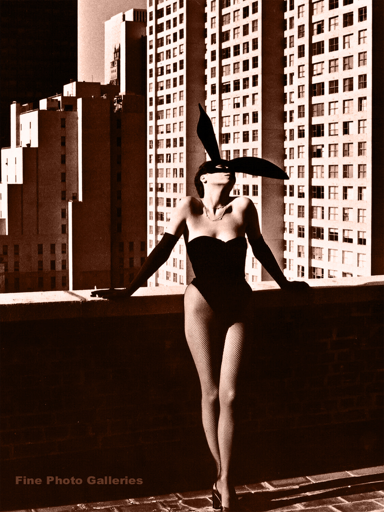
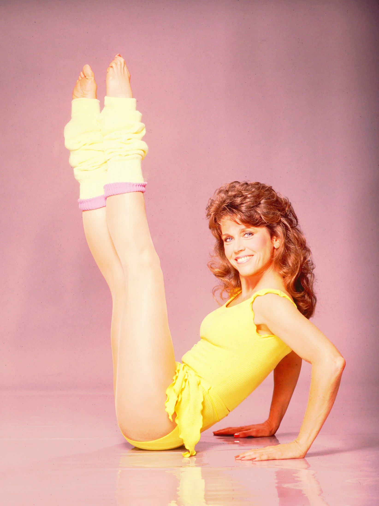
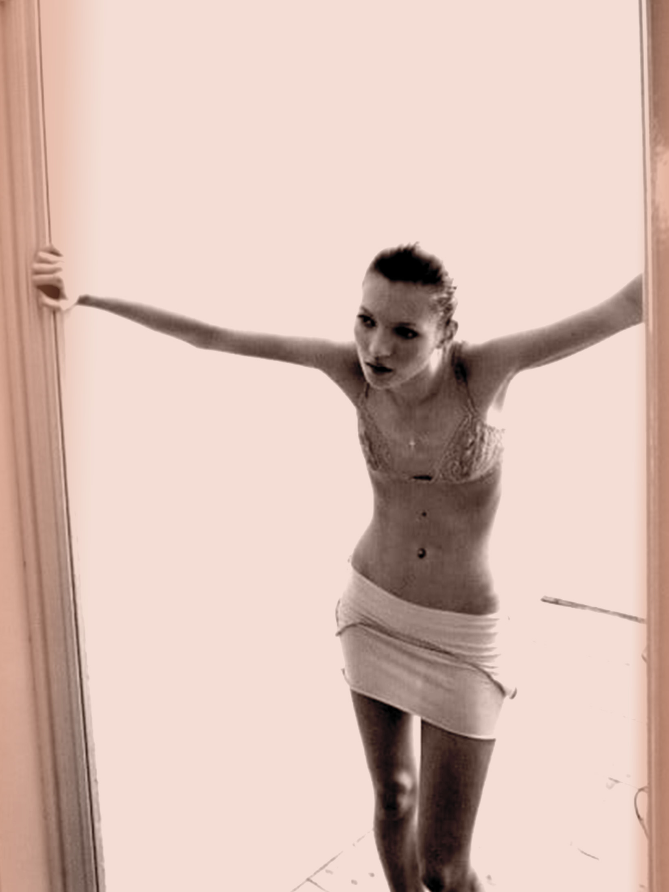
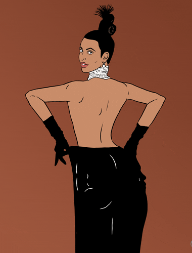

1950s Hour Glass
36-24-34
(Recorded measurement of Marilyn Monroe)
Marilyn Monroe for Playboy (1953)
Following postwar shake-ups and the invention of Bikini, Playboy was born and so was its indoctrination of the ideal female body.
1960s Androgyny
30-23-32
(Recorded measurement of Twiggy)

Twiggy @Posterazzi (1968)
The swinging 60s ironed down the curves, dragging along a girlish trimmed line.
1970s Disco Diva
34-24-34
(Estimated measurement of Elsa Peretti)
Elsa Peretti @Helmut Newton (1975)
Slenderness persisted with more skin for show at the 70s disco ballrooms.
1980s Fitness Queen
36-25-35
(Reported measurement of Jane Fonda)
Jane Fonda @Getty Images (1982)
Fitness craze and glorified calorie burns of the 80s brought back some angularized curves.
1990s Heroine Chic
32-24-34
(Recorded measurement of Kate Moss)
Kate Moss @Corinne Day (1995)
Pendulum swong back to Herine Chic
in the mids of 90s grunge.
2000s Pelvic Clique
34-25-35
(Reported measurement of Paris Hilton)

Paris Hilton in Carl's Jr. Ads (2005)
Protruding hip bones, toned abs and thigh gaps, the manicured millennial curve (or the lack of it) set the stage for Slim Thick.
2010s Slim Thick
38-26-41
(Reported measurement of Kim Kardashian)
Artwork by @FOXADHD (2014)
“...hairless Asian skin with a California tan, a Jamaican dance hall ass...the abs of a lesbian gym owner, the hips of a nine-year-old boy...
The person closet to actually achieving this look is Kim Kardashian,
who as we know, was made by Russian scientists to sabotage our athletes. Everyone else is struggling.”
Bossypants, Tina Fay
Kylie Jenner eclipsed Kim in Instagram followers, both amassing over 170 million followers at the time of the eclipse.